Kubernetes(K8S)笔记03¶
记录下Kubernetes学习笔记03，方便以后复习，具体参考网络资料Kubernetes 手册。
搭建k8s集群¶
搭建Kubernetes集群
搭建方案
- minikube
- kubeadm
- 二进制安装
- 命令行工具
命令行工具
- kubectl
API概述
- 类型
- Alpha
- Beta
- Stable
- 访问控制
- 认证
- 授权
- 废弃 api 说明
这里使用kubeadm搭建k8s集群
服务器要求
- 3台服务器
- k8s-master：
192.168.64.134 - k8s-node1：
192.168.64.135 - k8s-node2：
192.168.64.136 - 最低配置：2核、2G内存、20G硬盘
- 最好能联网
软件环境
- 操作系统：Ubuntu 24.04
- Docker：20+
- k8s：1.23.6
安装部署
- 初始操作
- 安装基础软件（所有节点）
- 安装 Docker
- 添加阿里云 yum 源
- 安装 kubeadm、kubelet、kubectl
- 部署 kubernetes master
- 加入 kubernetes node
- 部署 CNI 网络插件
- 测试 kubernetes 集群
前置步骤¶
关闭防火墙¶
查看当前的防火墙状态：sudo ufw status
关闭防火墙：sudo ufw disable
关闭swap¶
暂时关闭：sudo swapoff -a
永久关闭：先关闭swap，再删除Swap分区文件：sudo rm /swap.img，然后编辑/etc/fstab文件，注释或者删除/swap.img none swap sw 0 0这一行。
总的命令：
开启网络转发等配置¶
overlay 是文件系统。由于Docker是分层的，上层的文件会覆盖下层的文件，使用到了overlay文件系统。
br_netfilter 网络转发。br_netfilter模块可以使 iptables 规则可以在 Linux Bridges 上面工作，用于将桥接的流量转发至iptables链。如果没有加载br_netfilter模块，那么并不会影响不同node上的pod之间的通信，但是会影响同node内的pod之间通过service来通信。
1.加载两个内核模块
持久化上述的两个模块：
通过运行 lsmod | grep br_netfilter 和 lsmod | grep overlay 来检查模块是否已加载。
2.设置内核参数，确保二层的网桥在转发包时也会被iptables的forward规则所过滤
cat <<EOF | sudo tee /etc/sysctl.d/k8s.conf
net.bridge.bridge-nf-call-ip6tables = 1
net.bridge.bridge-nf-call-iptables = 1
net.ipv4.ip_forward = 1
EOF
3.应用sysctl配置
总的命令：
sudo modprobe overlay
sudo modprobe br_netfilter
cat <<EOF | sudo tee /etc/modules-load.d/k8s.conf
overlay
br_netfilter
EOF
cat <<EOF | sudo tee /etc/sysctl.d/k8s.conf
net.bridge.bridge-nf-call-ip6tables = 1
net.bridge.bridge-nf-call-iptables = 1
net.ipv4.ip_forward = 1
EOF
sudo sysctl --system
设置主机名¶
查看当前主机名Check the Current Hostname：hostname
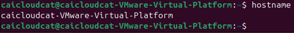
临时更改主机名：sudo hostname linuxconfig
永久更改主机名：sudo hostnamectl set-hostname linuxconfig,再重启
使用命令检查主机名更改：hostnamectl
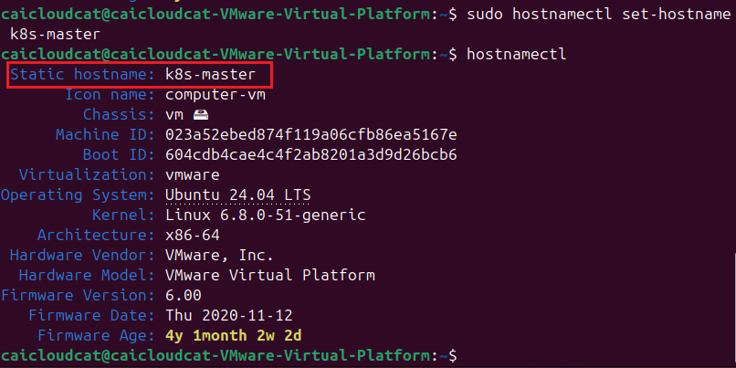
最后修改hosts文件：sudo vim /etc/hosts
详见Setting the Hostname on Ubuntu 24.04
在master节点设置hosts¶
sudo sh -c 'cat >> /etc/hosts <<EOF
192.168.64.134 k8s-master
192.168.64.135 k8s-node1
192.168.64.136 k8s-node2
EOF'
设置后，可以通过ping k8s-node1来测试是否设置成功。
设置远程连接¶
安装OpenSSH：sudo apt install openssh-server
启动OpenSSH：sudo systemctl start ssh
设置开机自启：sudo systemctl enable ssh
安装Docker¶
具体详见k8s的官方下载手册Install Docker Engine on Debian
卸载旧版本：for pkg in docker.io docker-doc docker-compose docker-compose-v2 podman-docker containerd runc; do sudo apt-get remove $pkg; done
官方文档安装¶
使用apt存储库安装：
# Add Docker's official GPG key:
sudo apt-get update
sudo apt-get install ca-certificates curl
sudo install -m 0755 -d /etc/apt/keyrings
sudo curl -fsSL https://download.docker.com/linux/debian/gpg -o /etc/apt/keyrings/docker.asc
sudo chmod a+r /etc/apt/keyrings/docker.asc
# Add the repository to Apt sources:
echo \
"deb [arch=$(dpkg --print-architecture) signed-by=/etc/apt/keyrings/docker.asc] https://download.docker.com/linux/debian \
$(. /etc/os-release && echo "$VERSION_CODENAME") stable" | \
sudo tee /etc/apt/sources.list.d/docker.list > /dev/null
sudo apt-get update
安装Docker软件包
安装最新版：sudo apt-get install docker-ce docker-ce-cli containerd.io docker-buildx-plugin docker-compose-plugin
要安装特定版本，首先列出存储库中可用的版本：
# List the available versions:
apt-cache madison docker-ce | awk '{ print $3 }'
5:27.4.0-1~debian.12~bookworm
5:27.3.1-1~debian.12~bookworm
...
选择所需的版本安装：
VERSION_STRING=5:27.4.0-1~debian.12~bookworm
sudo apt-get install docker-ce=$VERSION_STRING docker-ce-cli=$VERSION_STRING containerd.io docker-buildx-plugin docker-compose-plugin
国内镜像源安装¶
当然，考虑到国内网络问题，上面的安装可能会失败，可以参考安装手册最新安装Docker教程
具体步骤如下：
sudo apt-get update
sudo apt-get install ca-certificates curl
sudo install -m 0755 -d /etc/apt/keyrings
sudo curl -fsSL https://mirrors.cloud.tencent.com/docker-ce/linux/ubuntu/gpg -o /etc/apt/keyrings/docker.asc
sudo chmod a+r /etc/apt/keyrings/docker.asc
echo "deb [arch=$(dpkg --print-architecture) signed-by=/etc/apt/keyrings/docker.asc] https://mirrors.cloud.tencent.com/docker-ce/linux/ubuntu/ \
$(. /etc/os-release && echo "$VERSION_CODENAME") stable" | sudo tee /etc/apt/sources.list.d/docker.list > /dev/null
sudo apt-get update
sudo apt-get install docker-ce docker-ce-cli containerd.io docker-buildx-plugin docker-compose-plugin
sudo systemctl start docker
sudo systemctl enable docker
sudo docker version
sudo docker compose version
验证安装：sudo docker run hello-world
配置Docker镜像源
如果安装上面的验证安装成功，则可以跳过。
第一步：新建或编辑daemon.json：sudo vim /etc/docker/daemon.json
第二步：daemon.json中编辑如下：
第三步：重启docker：sudo systemctl restart docker.service
第四步：执行docker info查看是否修改成功：docker info
再次验证安装：sudo docker run hello-world
启动Docker，设置开机自启：sudo systemctl enable docker --now
安装kubeadm、kubelet、kubectl¶
curl -fsSL https://mirrors.aliyun.com/kubernetes/apt/doc/apt-key.gpg | sudo gpg --dearmor -o /etc/apt/keyrings/kubernetes-archive-keyring.gpg
echo "deb [signed-by=/etc/apt/keyrings/kubernetes-archive-keyring.gpg] https://mirrors.aliyun.com/kubernetes/apt/ kubernetes-xenial main" | sudo tee /etc/apt/sources.list.d/kubernetes.list
sudo apt-get update
安装最新版本
安装特定版本
查看可用版本
我们安装的是kubeadm=1.23.6-00
sudo apt-get install kubelet=1.23.6-00
sudo apt-get install kubeadm=1.23.6-00
sudo apt-get install kubectl=1.23.6-00
sudo apt-mark hold kubelet kubeadm kubectl
查看安装的版本：
设置开机自启：sudo systemctl enable kubelet --now
安装cri-dockerd¶
初始化master节点¶
接下来在master节点上进行初始化操作。
sudo kubeadm init \
--apiserver-advertise-address=192.168.64.134 \
--../../../PageImage/image20241230004725-repository registry.aliyuncs.com/google_containers \
--kubernetes-version v1.23.6 \
--service-cidr=10.96.0.0/12 \
--pod-network-cidr=10.244.0.0/16
讲解：
--apiserver-advertise-address=192.168.64.134：指定API Server的IP地址，这里使用的是master节点的IP地址。--../../../PageImage/image20241230004725-repository registry.aliyuncs.com/google_containers：指定镜像仓库，这里使用的是阿里云的镜像仓库。--kubernetes-version v1.23.6：指定Kubernetes的版本，这里使用的是v1.23.6。--service-cidr=10.96.0.0/12：指定Service的CIDR范围，这里使用的是10.96.0.0/12。--pod-network-cidr=10.244.0.0/16：指定Pod的CIDR范围，这里使用的是10.244.0.0/16。
最后的输出：
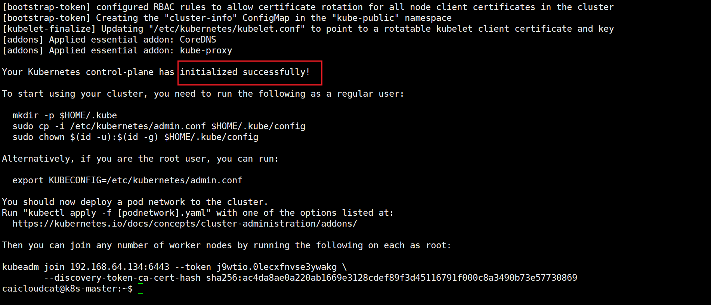
To start using your cluster, you need to run the following as a regular user:
mkdir -p $HOME/.kube
sudo cp -i /etc/kubernetes/admin.conf $HOME/.kube/config
sudo chown $(id -u):$(id -g) $HOME/.kube/config
执行kubectl get nodes，可以看到master节点已经加入到集群中。
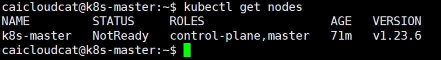
加入k8s-node节点¶
在k8s-node节点（k8s-node1、k8s-node2）上执行：
sudo kubeadm join 192.168.64.134:6443 --token <master控制台的token> \
--discovery-token-ca-cert-hash sha256:<master控制台的hash值>
如果初始化的token不小心清空了，可以通过下面的命令获取或者重新申请：
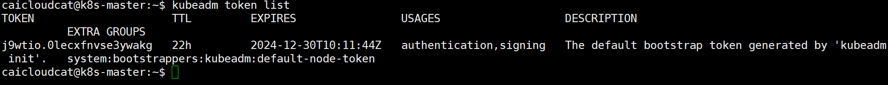
可以看到这个token值为：j9wtio.0lecxfnvse3ywakg
如果已经过期，则需要重新申请：
接下来获取master节点的hash值：
openssl x509 -pubkey -in /etc/kubernetes/pki/ca.crt | openssl rsa -pubin -outform der 2>/dev/null | openssl dgst -sha256 -hex | sed 's/^.* //'
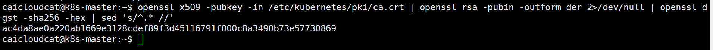
这段命令的作用是从Kubernetes的CA证书中提取公钥，并计算其SHA-256哈希值，以便在加入节点时使用，这里的hash值为ac4da8ae0a220ab1669e3128cdef89f3d45116791f000c8a3490b73e57730869。
在Kubernetes中，使用--discovery-token-ca-cert-hash参数时，要求提供的hash值必须以sha256:前缀开头。这是因为Kubernetes需要明确知道所提供的hash值是使用SHA-256算法计算的。
因此最后的命令为（在k8s-node节点上执行）：
sudo kubeadm join 192.168.64.134:6443 --token j9wtio.0lecxfnvse3ywakg \
--discovery-token-ca-cert-hash sha256:ac4da8ae0a220ab1669e3128cdef89f3d45116791f000c8a3490b73e57730869
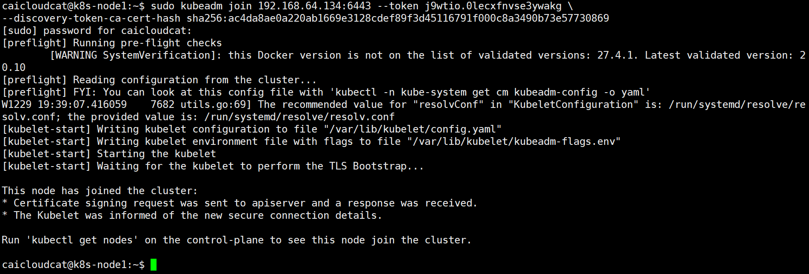
执行kubectl get nodes，可以看到k8s-node1、k8s-node2节点已经加入到集群中。
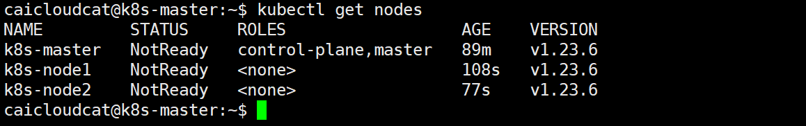
部署CNI网络插件¶
在使用kubectl get nodes命令时，如果看到STATUS为NotReady，则需要部署CNI网络插件。
我们又用kubectl get pods -n kube-system命令查看，可以发现有两个pod没有正常运行。
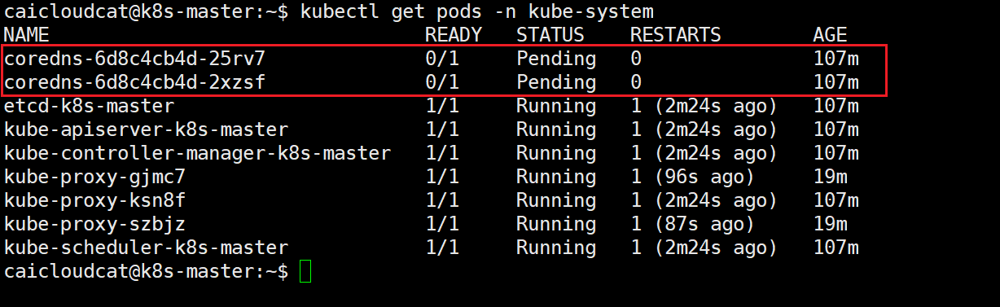
在这里我们使用calico网络插件，在master节点执行命令。
首先创建对应的文件夹进行管理：
下载calico的yaml文件：
修改calico.yaml文件中的CALICO_IPV4POOL_CIDR配置，修改为与初始化的--pod-network-cidr相同，具体看初始化master节点：
CALICO_IPV4POOL_CIDR配置，大致在4601行，修改为10.244.0.0/16。
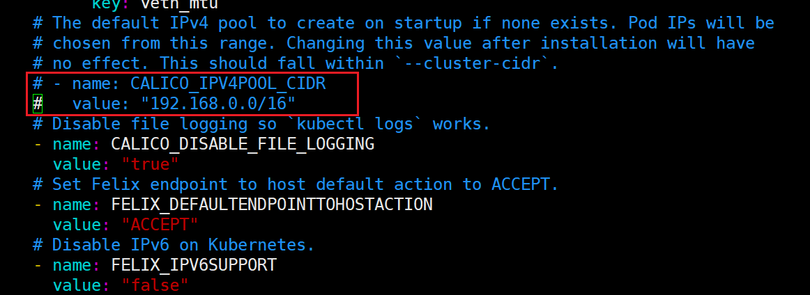
接下来配置IP_AUTODETECTION_METHOD。
完毕后，查看下载calico.yaml文件对应需要的镜像grep ../../../PageImage/image20241230004725 calico.yaml：
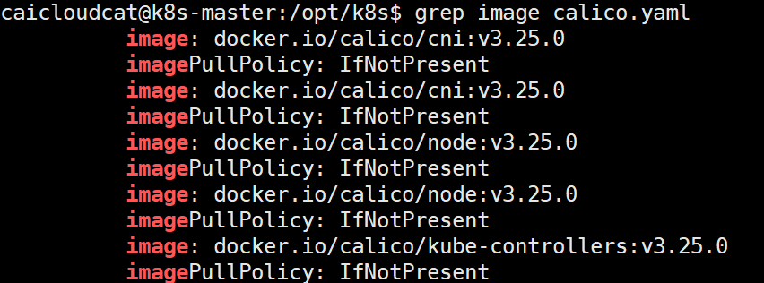
可以看到，镜像前面有docker.io/前缀，为避免下载过慢导致失败,因而可以删除该前缀。
然后下载镜像：
sudo docker pull calico/cni:v3.25.0
sudo docker pull calico/node:v3.25.0
sudo docker pull calico/kube-controllers:v3.25.0
执行kubectl get pods -n kube-system，可以看到已经有显示对应的calico的Pod。
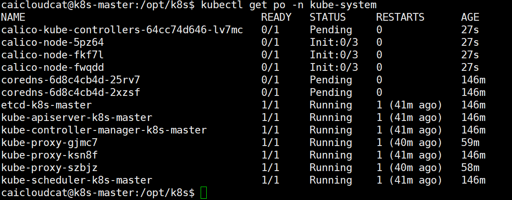
期间可以使用kubectl describe po xxx -n kube-system查看对应的Pod的详细信息。
如果遇到Init:Error../../../PageImage/image20241230004725Pull，具体可以参考K8s的Pod出现Init:../../../PageImage/image20241230004725PullBackOff问题的解决(以calico为例)
测试k8s集群¶
kubectl create deployment nginx --../../../PageImage/image20241230004725=nginx
kubectl expose deployment nginx --port=80 --type=NodePort
kubectl get pod,svc
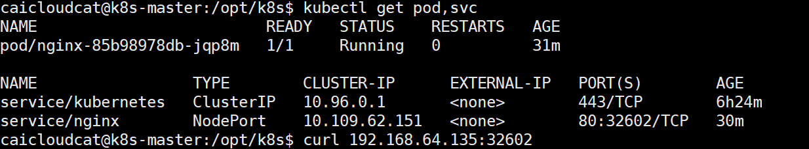
使用curl 192.168.64.134，可以看到nginx的页面。
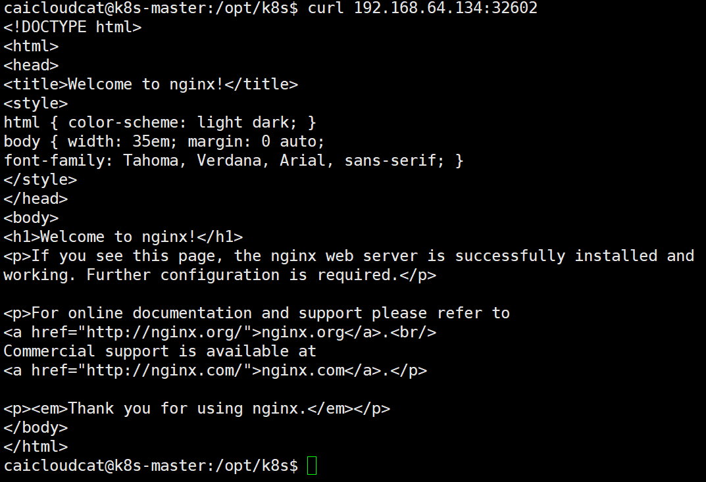
同理，也可以使用192.168.64.135、192.168.64.136访问到nginx的页面。

命令行工具kubectl¶
在任意节点上使用kubectl¶
1.将master节点中etc/kubernetes/admin.conf文件复制到任意节点中：
2.在对应的服务器中配置环境变量：
3.在任意节点中使用kubectl命令来测试：
基本的kubectl命令¶
详细见官方命令：命令行工具 (kubectl)
资源类型与别名：
- pods：po
- deployments：deploy
- services：svc
- namespace：ns
- nodes：no
API概述¶
API的版本区别与废弃API查询
官方文档：API 概述
API的三种类型
- Alpha（不推荐使用）：版本名称包含
alpha（例如：v1alpha1）。 - Beta（推荐使用）：版本名称包含
beta（例如：v1beta1）。 - Stable（稳定）：版本名称如
vX，其中X为整数。
访问控制
- 认证
- 授权
废弃API说明，具体文档是Deprecated API Migration Guide
格式化输出：
-o wide：以纯文本格式显示输出，并显示更多的信息。-o yaml：以yaml格式显示输出。-o json：以json格式显示输出。-o name：以名称格式显示输出。
参考资料¶
k8s集群搭建（基于v1.23.6） 2024-05-18
基于Ubuntu下安装kubernetes集群指南 2023-08-10
How Install Kubernetes on Ubuntu 24.04 (Step-by-Step Guide)，在csdn上找到一个翻译过得Ubuntu 24.04 上安装 Kubernetes，超级详细的教程！，但是标签显示的是“原创”，稍微有点搞笑，所以还是看英文的吧。
k8s版本号说明 - 个人博客